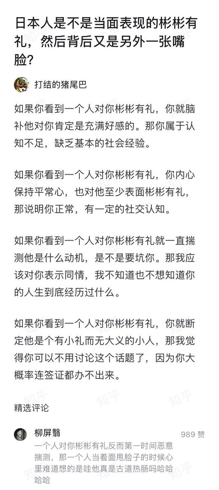

愿晚星照常升起🌈(keep4o)
@tadatsukiei
@Ben190920 你的心理阴暗程度让我震惊。

LI LIAO SHI
@Ben190920
日本首相高市早苗在X上发文，美其名曰是慰问山西矿难，发的文宣使用了中日英三种文字。
这种东西，当然要被骂了。
正常情况下，日本首相可以向中国总理或主席发出慰问电，直接高效，相关新闻也会通过国家级权威媒体对外发布。结果，有正道不走，偏要在X上发文作秀，慰问中国矿工，还要用英文慰问？